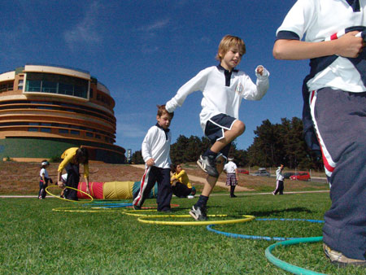
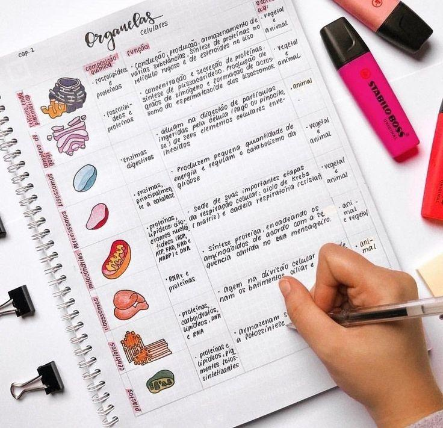
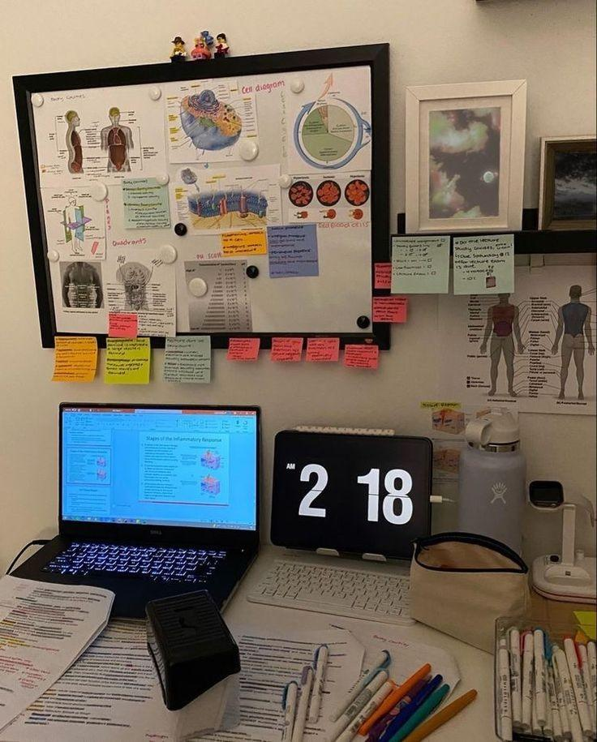
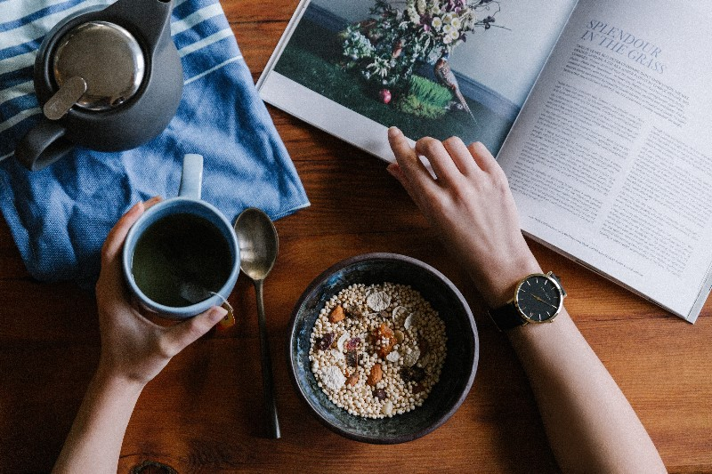

VIDA ESTUDIANTIL
Los años de estudiante son la mejor época de la vida. Es el momento de las nuevas oportunidades, de los primeros trazos de planes serios y de objetivos. Es el momento en el que los estudiantes empiezan a entender cómo hacer realidad sus ideas.
Obtener nuevos conocimientos aumenta la autoestima y tener nuevos amigos aumenta la confianza en uno mismo. Los estudiantes se vuelven más ambiciosos, persistentes, independientes y empiezan a tomar iniciativas en diferentes ámbitos de la vida. Realizar las primeras investigaciones científicas y participar en conferencias de alto nivel puede ser el primer paso de un estudiante en su carrera hacia el éxito
CÓMO SER UN BUEN ESTUDIANTE
1. Toma atención en las clases
Esto es básico, pero fundamental si quieres que tus notas mejoren y, además, con esto te evitas pasar tanto tiempo estudiando. Prestar atención en clases te ayudará a recordar con mayor facilidad la materia al estudiar, con lo que perderás menos tiempo y podrás descansar más u optimizar ese tiempo en otras labores.
2. Toma apuntes
Basándonos en el primer consejo, el segundo viene muy de la mano: tomar apuntes de la materia que se está dictando es una buena forma de mejorar tus estudios. Eso sí, los apuntes deben ser a la antigua, con lápiz y papel, ya que está comprobado que de esta manera se procesa mejor la información y ayuda a retener por más tiempo lo que se acaba de escuchar.
3. Repasa lo que has aprendido
Otra clave que te ayudará a ser un buen estudiante es repasar lo que has aprendido. Lo primordial es que no solo te quedes con lo leído por primera vez. Para que no se te olvide la materia después de leerla es fundamental que la repases, porque esta acción refuerza las redes neuronales que se forman al aprender nuevos temas
4. Comienza a ejercitar tu mente (lee otro tipo de materias)
¿Sabías que el cerebro es como un músculo, por lo tanto, también se puede ejercitar? La idea es leer todo tipo de materias o libros de interés para que tu memoria se instruya y así mejores su capacidad. De esta forma, podrás internalizar lo que estudias y estar más atento cuando comienzas a repasar tus ramos.
5. Organiza tu calendario
El orden es un don primordial en un buen estudiante, sobre todo pensando en que deseas mejorar tus notas. Es por esto que es aconsejable contar con un calendario con el cual podrás anotar tus tareas, pruebas, exámenes finales, horarios de estudios o cualquier otro evento importante que creas que valga la pena asignar en el calendario.
6. Ten un sueño tranquilo (dormir bien)
¡No pases de largo! No dormir por un examen final o una prueba muy compleja es muy común en los estudiantes, pero es una muy mala práctica para rendir en tus estudios. Tienes que dejar descansar a tu cuerpo y mente para refrescar ideas, procesar lo estudiado y llenarte de energías para el desafío que se viene. Se recomienda que un adulto duerma alrededor de 7 horas cada noche.
7. Toma descansos del estudio
Esto parece contradictorio, pero es muy necesario. Esta última clave es de gran ayuda para refrescar las ideas. Se aconseja descansar luego de 45 o 50 minutos de estudios intensos. Este tiempo te ayudará a reflexionar lo que estás estudiando, a estirar los músculos, comer algo o tomar agua. Si la materia es compleja y se necesita mayor tiempo de aprendizaje, entonces se aconseja que el tiempo de descanso sea más extenso también. El descanso se debe tomar una vez que un ítem de estudio esté resuelto, porque no es aconsejable dejar a medio camino algo que aún no logras resolver.
¿Cómo organizar el tiempo de estudio de manera más eficiente?
Si deseas organizar mejor tus estudios, es necesario que logres una administración del tiempo eficiente. De acuerdo con la opinión de los expertos, lo ideal es dividir el día en tres lapsos de 8 horas cada uno. -8 horas para dormir. -8 horas para trabajar. -8 horas para el ocio
Organizar el tiempo de estudio conlleva numerosos beneficios. Esta práctica contribuye a reducir el estrés en los estudiantes al facilitar una mayor preparación para las evaluaciones y permitir entregar las distintas tareas y asignaciones a tiempo.
Muchas personas sufren de gran presión y ansiedad durante la temporada de exámenes a causa de no contar con un plan de estudios eficiente. Al carecer de esta clase de organización, es muy común que los deberes se acumulen y las responsabilidades del día a día interrumpan nuestras sesiones de aprendizaje.
¿Cómo aprovechar el tiempo de estudio?
-Si estás a punto de dar inicio a un programa académico, es necesario que dediques algo de tiempo a la creación de un plan de estudios que comprenda todas las materias que se estudiarán.
-Al conocer las distintas asignaturas con las que será necesario cumplir y organizar el tiempo del que se dispone para atenderlas, será mucho más sencillo enfocarse en una tarea a la vez y lograr una mayor productividad.
-Por otra parte, al momento de iniciar una sesión de estudio, es necesario preparar el área de trabajo con todos los materiales que puedan necesitar y descartar aquellos elementos que puedan convertirse en una distracción, como teléfonos móviles, consolas de videojuegos, entre otros.
-Al mismo tiempo, al organizar el tiempo de estudio, es necesario tomar en consideración las pausas para descansar. Estudiar durante muchas horas intentando mantener la concentración al máximo no es una técnica muy eficaz
DERECHOS DE AUTOR
Páginas donde fue sacada la información, textos, inspiración: